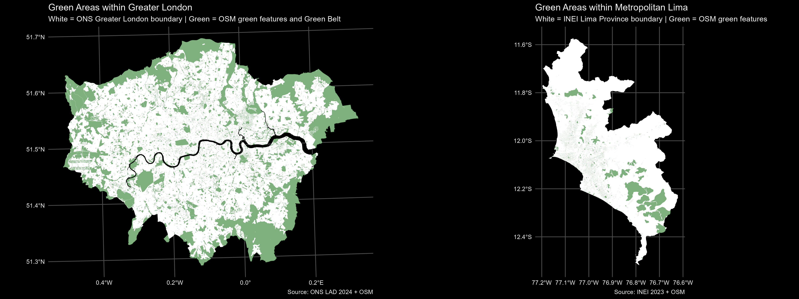

A Tale of Two Cities
Having lived in London for the last four years, one of the things I appreciate most is the abundance of parks and green spaces. London consistently ranks among the top five cities globally for green coverage, depending on the methodology used. City planners around the world face the challenge of balancing productive and recreational land use — a balance that profoundly shapes the quality of urban life.
Throughout human history, our close relationship with nature has made access to green areas an essential component of modern living. These spaces provide environmental benefits such as improved air quality, social value through shared community spaces, and significant mental health benefits. Research also suggests that exposure to nature can enhance creativity and productivity. Green areas are not just leisure amenities — they are vital for sustainable, resilient, and liveable cities, playing a crucial role in mitigating the effects of climate change.
This project quantifies and maps green areas in London and Lima using OpenStreetMap (OSM) data. The goal is to estimate the total share of green areas and their distribution within each city as a proxy for inclusivity and accessibility. Both capitals share similarities in population size and area (Table 1), yet differ substantially in infrastructure, planning, and income levels — though these socioeconomic factors are beyond the focus of this study.
Table 1: Demographic Comparison
| Dimension | Greater London | Metropolitan Lima |
|---|---|---|
| Area | 1,573 km² | 2,819 km² |
| Population (2025) | 9.8 million | 11.5 million |
| GDP per capita, PPP (2024) | $60,620 | $17,802 |
Notes: The GDP per capita (PPP, current international $) figures correspond to the United Kingdom for Greater London and Peru for Metropolitan Lima.
Source: World Bank (2024); World Population Review (2025).
Data and Methodology
To calculate the share of green space, OpenStreetMap (OSM) data was used to extract green area polygons for both cities. For London, these polygons were combined with Natural England’s Green Belt data — a designated zone of open, undeveloped land encircling London, designed to limit urban sprawl and preserve open countryside.
Each dataset was spatially clipped to the official city boundaries: Lower Layer Super Output Areas (LSOAs) for London, obtained from the Office for National Statistics (ONS), and administrative districts (distritos) for Lima, from Peru’s National Institute of Statistics and Informatics (INEI). The analysis then computed the share of total green area as a percentage of each unit’s total land area using spatial intersection and area-weighted aggregation.
Results
The analysis finds that Greater London’s green area share is approximately 33.6%, equivalent to 529 km² of land. This figure aligns with findings from Greenspace Information for Greater London (GiGL), which estimates that 33% of London’s area consists of natural habitats and an additional 14% is domestic garden space making a total of 47%. Despite this, access is not uniform — leafy boroughs in the southwest contrast sharply with denser urban areas where public green space is limited.
In comparison, Metropolitan Lima’s total green area share is 11.3%, covering about 317 km². The spatial distribution of green areas is uneven: substantial parks and vegetated zones are concentrated in the south and some parts of the north, while much of the east — and large portions of the densely populated northern districts — show limited access to such spaces.

Key Insights
- Equity of access matters as much as total coverage. While London’s 33.6% green share appears high, some boroughs still experience shortages in accessible public green space, often correlating with higher population density and lower income levels.
- Urban planning legacies shape outcomes. London’s protected Green Belt has been instrumental in preserving open land, but it also limits housing supply within the city, pushing development outward. Lima, on the other hand, has expanded rapidly with minimal zoning restrictions, resulting in fragmented and uneven green coverage.
- Socioeconomic disparities are visible on the map. In Lima, green areas tend to cluster around higher-income neighbourhoods and tourist zones, highlighting inequalities in urban amenities.
- Climate adaptation potential. Expanding and maintaining urban green areas can help mitigate heat stress, improve air quality, and enhance biodiversity — benefits particularly relevant to Lima’s arid coastal environment.
Conclusions and Policy Recommendations
This comparative analysis underscores that both cities, despite their differences, face ongoing challenges in ensuring equitable access to nature within dense urban environments.
For London, maintaining and improving accessibility should remain a priority. Policymakers could focus on enhancing micro-green spaces, improving green corridors, and ensuring that new developments incorporate accessible public green areas.
For Lima, the challenge is more foundational: expanding green coverage, prioritising green infrastructure in urban planning, and promoting community-led initiatives to revitalise degraded public spaces. Integrating green design into housing and transport projects would also contribute to a more sustainable and liveable city.
Green spaces are essential urban infrastructure — not luxuries. They improve health, foster social connection, and build resilience to climate change. Whether in London, Lima, or elsewhere, increasing equitable access to green areas should be central to the vision of every modern city.
Interactive Maps
Beyond the numbers, visualising the spatial distribution of green spaces reveals the story more powerfully. While Greater London benefits from a wide network of parks, woodlands, and the surrounding Green Belt, Lima’s pattern highlights the urban and social challenges of providing equitable access to nature in a rapidly expanding metropolis.
The interactive maps below allow readers to explore these differences directly, zoom into neighbourhoods, compare patterns, and reflect on how green space accessibility shapes the liveability of each city.
Interactive map for Greater London
The interactive map below displays the share of green areas across neighbourhoods (Lower Layer Super Output Areas – LSOAs) in Greater London.
Users can explore how access to green spaces varies spatially, from the central urban core to the surrounding areas covered by the Green Belt.
Source: OpenStreetMap, ONS, Natural England (Green Belt). Author’s analysis. —
Interactive map for Metropolitan Lima
This interactive map shows the proportion of green areas by district in Metropolitan Lima.
It highlights the uneven distribution of green spaces across the city, where some districts have extensive green coverage while others have very limited access.
Source: OpenStreetMap, INEI. Author’s analysis.
References
- Office for National Statistics (ONS). (2024). Local Authority Districts (May 2024) Boundaries UK (BGC). ONS Geoportal. https://geoportal.statistics.gov.uk/
- Natural England. (2023). Green Belt boundaries (England). GOV.UK / data.gov.uk.
- Instituto Nacional de Estadística e Informática (INEI). (2023). Límites distritales del Perú (District boundaries).
- OpenStreetMap contributors. (2025). OpenStreetMap planet dump. Available under the Open Database License (ODbL). https://www.openstreetmap.org/copyright
- Greenspace Information for Greater London (GiGL). (2018). Mapping London’s Green Belt and Metropolitan Open Land (blog / dataset).
- World Bank. (2024). World Development Indicators.
- World Population Review. (2025). Population estimates.
Data licences & notes:
- OpenStreetMap data are provided under the Open Database License (ODbL). Users may copy, modify, and publish OSM-derived data provided derivative data are shared under the same licence and attribution is given.
- ONS and Natural England datasets are subject to their respective terms of use — please consult the original data portals for licence details.
Code & reproducibility:
All analysis code, processing scripts and the instructions to reproduce the maps are available on GitHub: green_cities repository.